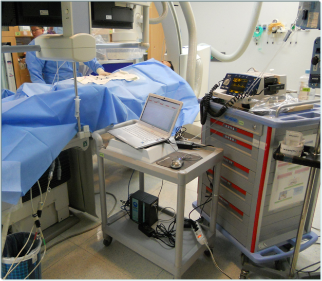
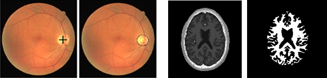
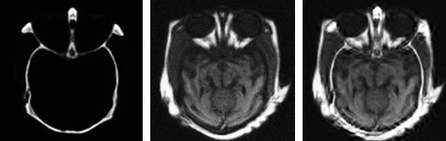

技术特点:
主要对血压、脉搏、心电等在内的多种体表生理参数的信号提取，通过传感器技术、数字信号处理技术和多信息融合技术等方面研究，将实验室实验与临床实验相结合。
应用前景:
无线传输自动生理信号采集系统；老年医疗保健睡眠枕垫与睡眠监控评估系统等。
成果展示:

技术特点:
图像分析是指利用数学模型并结合图像处理的技术来分析底层特征和上层结构，从而提取具有一定智能性的信息。图像理解是对图像的语义进行理解，研究图像中有什么目标、目标之间的相互关系、图像是什么场景。
应用前景:
感兴趣区域提取；目标检测与提取；目标定位与分割；对称性检测；图像融合；图像修复；语义理解。
成果展示:


